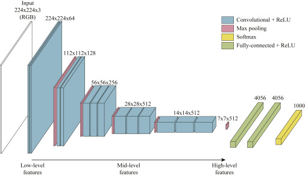

Automatic facial recognition without human intervention is increasingly possible due to advances in technology. Neural networks and affordable, faster computers play a significant role in this progress. Online facial recognition interfaces provided by many service providers come with drawbacks such as internet dependency, costs, and data security concerns. Ensuring that personal data is handled confidentially is a major issue. This thesis focuses on developing offline facial recognition using local resources. It evaluates neural networks and convolutional neural networks (ConvNets), aiming to demonstrate the feasibility of a MATLAB software prototype for this purpose.

Many online service providers offer facial recognition interfaces, but these solutions require internet connections, often involve costs, and raise significant data security concerns. Ensuring confidential handling of personal data is crucial to prevent unauthorized sharing. These privacy issues highlight the need for secure, offline solutions that minimize dependence on external services.
This thesis explores the potential for an offline facial recognition system using local resources. It assesses both established and modern methods, focusing on neural networks and ConvNets. The aim is to demonstrate the feasibility of a secure MATLAB software prototype, ensuring efficient processing without compromising user privacy.